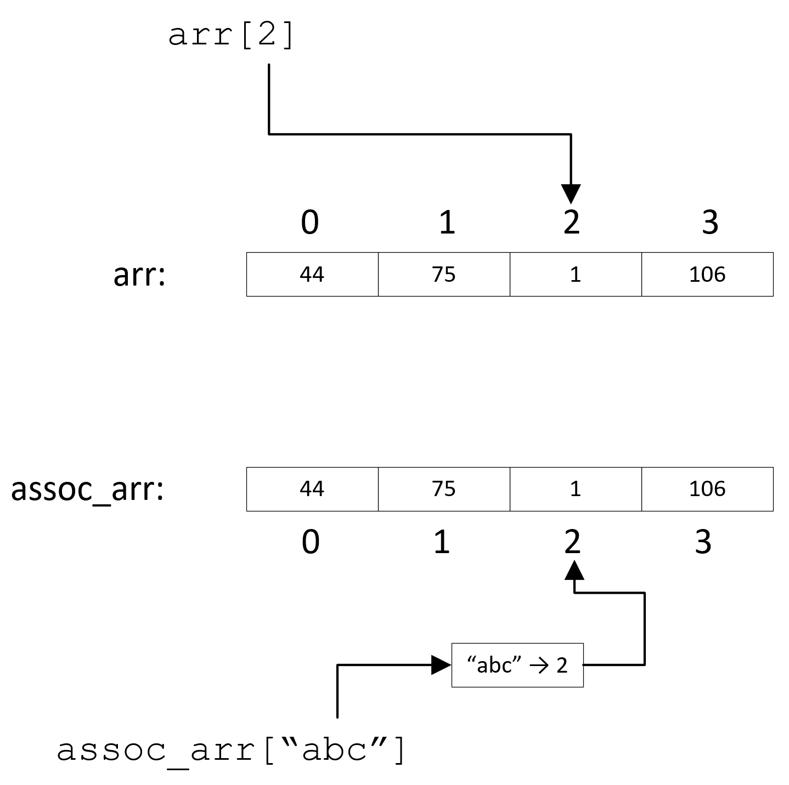
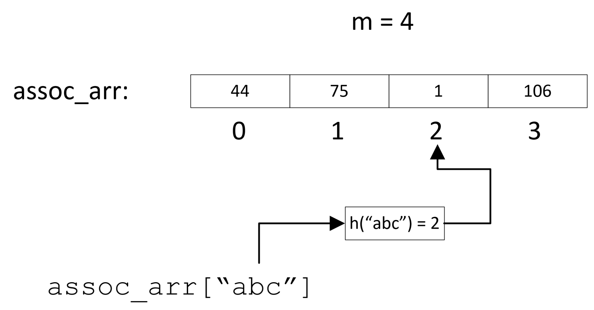
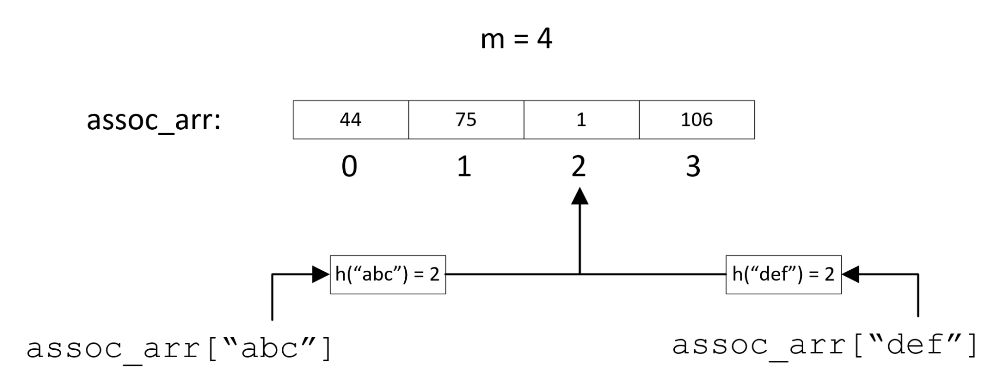
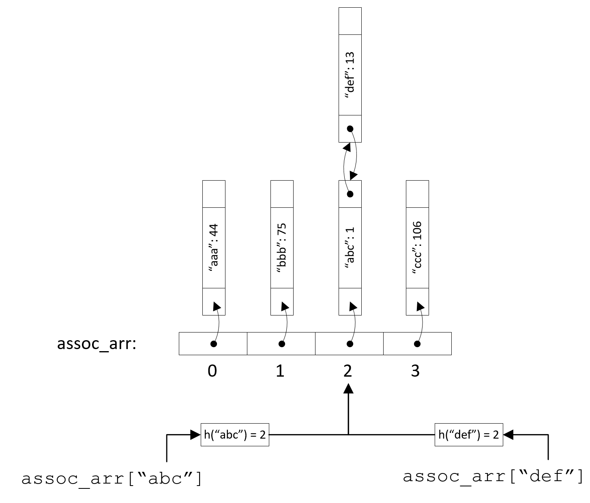

dict в Python)
Таким образом, мы можем эффективно оперировать элементами с произвольными ключами в массиве $T$, получая индекс каждого очередного элемента из его ключа $k$ с помощью $h(k)$.


Чтобы разрешить возникшую коллизию, т.е. каким-то образом сохранить элементы, хеши которых равны, причём так, чтобы их можно было различать при поиске, существуют два подхода:

Существуют следующие правила поиска:
Обе представленные функции не решают одну проблему: злоумышленник может намеренно подбирать значения ключей таким образом, чтобы они отображались в один и тот же хеш, вызывая тем самым “выстраивание” всех значений в одну цепочку и сводя сложность поиска к $O(n)$
std::unordered_setstd::unordered_map